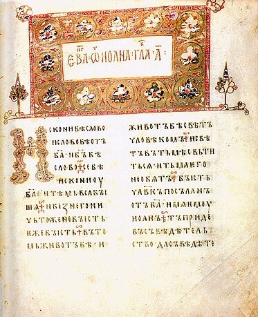
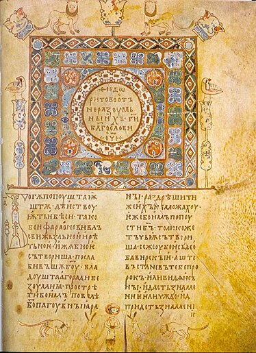
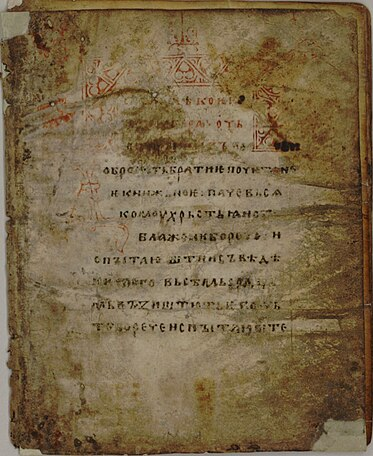
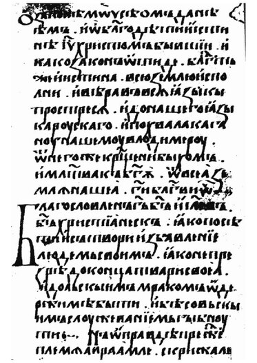
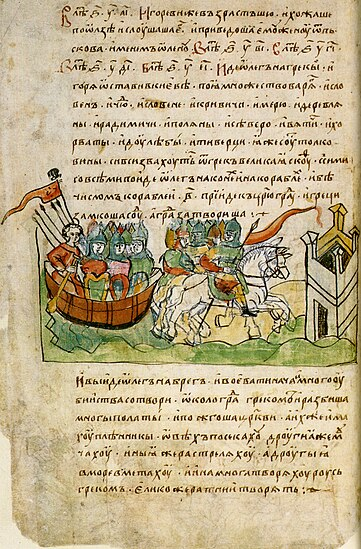

Література Русі
Давня українська література та Середньовічна українська література Найдавніші рукописні книги були створені на українських землях і дійшли до нас, розпочинаючи своє літочислення із середини X ст. Із запровадженням християнства в Київськой Русі (988) пожвавився розвиток торгівлі, ремесел, зовнішноньої політики й культури, що й спричинило розвиток писемності.
Розквіт Київської держави в X-XI ст. пов'язаний з іменами князів Володимира Великого та Ярослава Мудрого. Для зміцнення християнства й поширення греко-візантійської культури Володимир Великий заснував у Києві школу для дітей вищих верств суспільства. Один із перших літописів розповідає, що матері дітей, узатих на навчання, плакали, бо тоді ще не розуміли, наскільки важливою для людини є освіта. З цього часу не лише в Києві, а й в вінших містах почали відкривати школи. Ярослав Мудрий, який уславився любов'ю до книг, при Софійському соборі відкрив першу бібліотеку, яку пізніше було втрачено й не знайдено до сьогодні.
Існують наукові версії про винекнення писемності ще в дохристиянський період, проте братимемо до уваги лише писемні пам'ятки, що дійшли до нас. Адже саме ці книги — незаперечні документи, що дійшли до нас. Адже саме ці книги - незаперечні документи, на основі яких можна робити певні твердження. До них належать: Остромирове Євангеліє, Ізборник Святослава (1073), Ізборник (1076) та інші.
Першою визначною писемною пам'яткою Київської Русі є літопис «Повість минулих літ», який є не тільки джерелом історичних відомостей, а й хрестоматією епічних пісень, легенд та переказів епохи Київської Русі. Поетичним шедевром давньої літератури є «Слово о полку Ігоревім». Цей героїчний епос увібрав у себе найкращі зразки народної творчості того часу і став надбанням та гордістю всього слов'янського світу.
Книжкова культура Київської Русі розвивалась на досить високому рівні. Монастирі були центрами ідеологічного життя. Тут складалися житія святих, писалися літописи. В монастирях існували скрипторії, де переписувались книги для князівських та боярських сімей.
Перша бібліотека на Русі була організована за сприянням Ярослава Мудрого (1037 р.). Для сина Ярослава Мудрого Святослава була виготовленна одна з перших руських книг, що збереглися до наших часів – «Ізборник Святослава», в якому вміщено «список хибних та істинних книг» під назвою «Богословъця от словес».
При Софіївськову Соборі ще з першої половини XI століття діяв добре обладнанний, забезпечений необідним корпусом книг (950 томів), а також кваліфікованими писарями і художниками, великокняжий скрипторій, з якого вийшли найцінніші пам'ятки давньоруськогї писемності.
Книги в цей історичний період виготовляли з пергаменту (телячої шкіри) і тому коштували вони дуже дорого, адже за одну книгу можливо було купити великий будинок. Тому києворуська еліта, задля увіковічення своєї пам'яті, дарувала («жертвувала») книги православним манастирям. Списки таких «пожертвуваних» книг стали зразком київоруської бібліографії.
Давня українська література
 Остромирове Євангеліє автор: Автор дияк Григорій
Найдавніша датована рукописна пам'ятка церковнослов'янської мови Київської
держави.
Цей твір переписаний у 1056-1057 рр. з болгарського оригіналу дяком
Григорієм для новгородського посадника Остромира, від імені якого
Євангелія
дістало назву. Остромирове Євангеліє містить вибрані євангельські читання.
Хоча цей твір написаний
старослов'янською мовою, проте в ньому наявні вкраплення живої мови Русі-Україна. Рукопис пам'ятки,
який налічує 294 аркуші великого формату, по-мистецьки оздоблений
кольоровими ініціалами, заставками, трьома мініатюрами євангелістів Івана,
Луки й Марка.
 Ізборник Святослава (1073) Автор: дияк Іван.
Другою датованою давньоруською писемною пам'яткою є Ізборник Святослава (1073). Це — архаїчна рукописна хрестоматія, що містить різні вислови та фрагменти з богословських творів. Книга має єнциклопедичний зміст, у ній порушено проблеми християнського богослов'я, розтлумачуються положення Біблії про поводження в повсякденні. Тут наведено відомості з астрономії та астрології, математики та фізики, історії, філософії, граматики, зоології, ботаніки, логіки й етики. Ізборник переписав дяк Іван з іншими писцями для київського князя Святослава Ярославича з болгарського джерела, складеного на початку X ст. для болгарського царя Симеона. Ізборник Святослава містить 380 статей, які належать 25 авторам (здебільшого візантійцям).
 Ізборник (1076). Автор: дияк Іван
Третя датована писемна пам'ятка — Ізборник (1076) — складена за матеріалами рукописів княжої бібліотеки Софійського собору. Ця книга містить найрізноманітніші відомості духовного та філософського змісту — роздуми про правдиву віру, повчання дітям тощо.
 Слово про закон і благодать. Автор: Іларіон Київський
Стверджує самостійність Руської держави і церкви, заперечує повноваження Візантії щодо Києва. «Слово» підкреслює протилежність «закону» (давньої юдейської релігії) і «благодаті» (нової — християнської). «Закон» — це холод, морок і рабство, а «благодать» — тепло, осяяність і свобода. Так, колись і «земля наша» була порожня і висохла, аж доки «від краю до краю» не напоїло її євангельське джерело. Хрещення Києва — наслідок божеського піклування про Русь, це вияв, що Русь не є гірша від інших (Візантії) країн. Автор «Слова» не тільки представник політичних прямувань тогочасної Русі, але й талановитий письменник-промовець, що надав твору стрункої композиції, пишноти стилістичного оформлення та ритмічності вислову. «Слово» було призначене для «вибраних» слухачів. Це не перешкодило популярності «Слова», що його часто переписували і використовували, наприклад, у хвалі Володимиру Васильковичу, у Волинському літописі. Ним користався у другій половині XIII ст. сербський письменник, чернець Доментіян, пишучи про Симеона, Саву Сербських і Микиту Сергійовича.
 14-й листок Радзивіллівського літопису (оригінал не зберігся) повісті временних літ.Автор: Нестор Літописець
Перший літопис який дійшов до нас, його ще називають "Початковим літописом". Саме він розповідає про історію нашого народу від найдавніших часів і до днів життя Нестора Літописця ― упорядника цього твору. Установлено, що літопис має кількох авторів, але Нестор упорядкував його, художньо довершив, ведучи розповід до 1113 року. Це не лише своєрідний підручник історії, а й скарбниця поетичних і епічних сказань, байок, оповідань. Оповідь у літописі ведеться то спокійним, то драматичним тоном, який іноді переривається надзвичайно емоційними сплесками. Мова твору ― жива, образна, поетична, хоча й неоднорідна: у текстах наявні й старослов'янізми, і народно-розмовні елементи. Оригінал до нашого часу не зберігся, є лише пізні списки, тобто варіанти переписані з інших джерел. Найдавніші з них — Лаврентіївський, переписаний 1377 року, що охоплює події до 1110 року, та Іпатіївський (Іпатський), переписаний на початку XV століття з доведенням розповіді до 1117 року.
Нова українська література
Наприкінці XVIII століття бурлескно-травестійна поема Івана Котляревського «Енеїда» знаменувала появу новітньої літературної української мови і початок сучасної української літератури. Цей твір увібрав у себе перлини українського гумору, відобразив яскравий народний побут. Гумористичний і сатиричний тон творів Котляревського був підхоплений іншими письменниками, передусім членами т. зв. харківського гуртка (П. Гулак-Артемовський, Є. Гребінка). До харківського гуртка належав також Г. Квітка-Основ'яненко — основоположник української художньої прози, який перервав традицію використання української мови тільки в комічних жанрах.
Українська література в Підавстроугорській та Підпольській Україні
Тут
вікіпедія ще редагується.
Українська література в Підросійській Україні.
Період Російської імперії.
Незважаючи на Незважаючи на колоніальну політику російської імперської влади, утиски і заборони української культури Незважаючи на (1863 р. — Валуєвський циркуляр, 1876 р. — Емський указ), українська література розвивалася і досягла значних успіхів. У 1798 році побачила світ поема «Енеїда» Івана Котляревського — саме з неї почалася українська література мова. Котляревський також написав п'єси українською мовою «Наталка-Полтавка» і «Москаль-чарівник». На початку XIX століття українська література активно розвивається. В поезії тоді панував романтизм. Великий внесок у розвиток української літератури внесли поети так званої «Харківської школи романтиків» — П. Гулак-Артемовський, М. Петренко, В. Забіла та інші. Перші прозові твори українською мовою написав Григорій Квітка-Основ'яненко («Маруся», «Конотопська відьма», «Салдацький патрет»). Найвидатнішим українським літератором XIX століття був Тарас Григорович Шевченко — поет, художник, автор прозових і драматичних творів. У 1840 році побачила світ його збірка поезій «Кобзар». Значний внесок в розвиток української літератури зробили Пантелеймон Куліш, Марко Вовчок, Іван Нечуй-Левицький, Борис Грінченко, Михайло Коцюбинський, Леся Українка, Володимир Винниченко, Спиридон Черкасенко, Архип Тесленко.
Період СРСР.
Після революції літературний процес відзначався особливим драматизмом і складністю в Україні, як і в усьому СРСР. З одного боку українська література у цей час переживала небачений розквіт. На багатій літературній палітрі співіснували різноманітні художні школи, стилі і напрями — від радикального пролеткультівства, теоретики якого пропагували створення «лабораторним шляхом» «чисто пролетарської культури» (В. Блакитний, Г. Михайличенко, М. Хвильовий) до футуризму (М. Семенко) і навіть неокласицизму, представники якого орієнтувалися на створення високого гармонійного мистецтва на основі освоєння класичних зразків світової літератури (група неокласиків на чолі з М. Зеровим). У 1925—1928 роках відбулася «літературна дискусія» — публічне обговорення шляхів розвитку, ідейно-естетичної спрямованості та завдань нової української радянської літератури, місця і ролі письменника в суспільстві. Дискусія виникла через глибокі розходження у розумінні природи і мети художньої творчості серед українських письменників, ідейну і політичну конкуренцію літературних організацій. Однак більшість представників цієї хвилі українського відродження загинули в часи Громадянської війни, голодомору 1932—1933 років та більшовицьких репресій 1930-х років. У 1938—1954 роках було репресовано близько 240 українських письменників, хоча багато з них були прихильниками радянської влади, воювали за неї, відбулися як письменники вже після революції. Деякі з них були розстріляні, деякі так і померли в ув'язненні, доля деяких з них після арештів так і залишилася невідомою. Зазнавав арешту і визнаний радянською владою поет М. Рильський, 10 років провів у таборах за обвинуваченням в участі у міфічній Українській військовій організації Остап Вишня, були розстріляні Г. Косинка, М. Зеров, М. Куліш, Є. Плужник, М. Семенко. Покінчив життя самогубством М. Хвильовий, який намагався врятувати багатьох товаришів. Опинився під забороною і експериментальний театр «Березіль», а його керівник — всесвітньо відомий режисер Лесь Курбас — був арештований і розстріляний. Це покоління письменників в історії української літератури отримали власну назву — Розстріляне відродження. Незважаючи на жорсткі рамки панівного у радянську добу стилю соціалістичного реалізму, українським письменникам вдалося творити літературу, яка не втратила своєї актуальності і сьогодні. Це, передусім, твори П. Тичини, М. Рильського, В. Сосюри, О. Довженка, О. Гончара та інших.
Сучасна українська література.
Сучасна українська проза — українська література останніх десятиліть, створена сучасними письменниками. У науковій літературі точно не зазначено, від якого моменту українську літературу слід вважати сучасною. Утім, під поняттям «сучасна українська література» найчастіше розуміють сукупність художніх творів, — написаних від часу здобуття Україною незалежності в 1991 році й дотепер. Таке розмежування зумовлене відмиранням після 1991 року загальнообов'язкового для митців СРСР стилю соціалістичного реалізму та скасуванням радянської цензури. Принципові зміни в українській літературі відбулися ще в роки Перебудови (1985) і особливо після Чорнобильської катастрофи (1986). Деякі дослідники вважають, що сучасна українська література починається від 1970-х років після покоління шістдесятників.